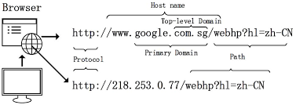
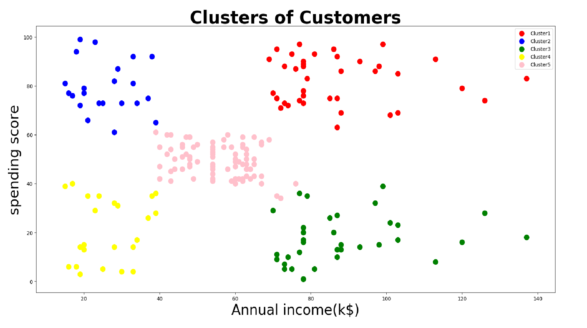
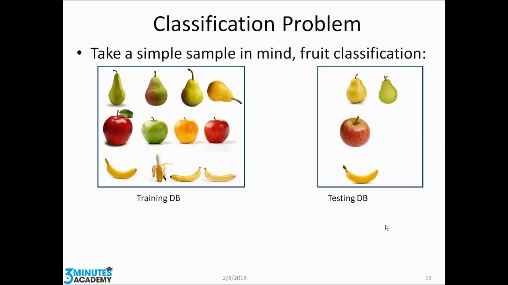

. This is the legendary Titanic ML competition – the best, first challenge for you to dive into ML competitions .Want to known how i Analysed .Check my full post
Predict The Book Price Hackathon ... dataset to build a Machine Learning model to predict the price of books based on a given set of features.Does the price Increase or Decrease CHeck my full post.
Predict sales prices and practice feature engineering, RFs, and gradient boosting.Want to predict house price.Check my full post..
Kaggle's Red Wine Quality dataset to build various classification models to predict whether a particular red wine is “good quality” or not. Each wine in this dataset is given a “quality” score between 0 and 10. Ready to test the Quality of my Wine.Check my full Post.

a Startup database, framing the ML as a classification problem of whether startups can raise a certain threshold .Can we predict the Startup Check my post.

Using demographic, real estate, and commercial data, this competition challenges you to predict the annual restaurant sales of 100,000 regional locations.Shall we predict the revenue.Check my full Post.

Machine Learning approaches, use a set of URLs as training data, and based on the statistical properties, learn a prediction function to classify a URL as malicious or benign.Is someone sending Malcious url 😊.Check my full Post.

Now the data preprocessing has been done and now let us move on to making the clustering model. I will use the K-Means Clustering algorithm to cluster the data.Lets check which mall belongs to which Category.Check my full Post.

MachineHack has launched its second Natural Language Processing challenge for its large Data .Eager to see which Category this news Belongs. Category.Check my full Post.

Using Fruit Classfication Dataset Can we Classify the fruits .So Lets classify . Check my full Post.